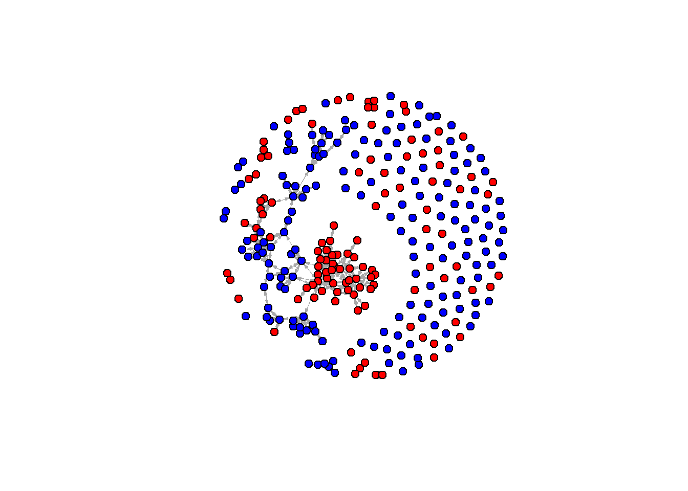

rm(list = ls())
fpackage.check <- function(packages) {
lapply(packages, FUN = function(x) {
if (!require(x, character.only = TRUE)) {
install.packages(x, dependencies = TRUE)
library(x, character.only = TRUE)
}
})
}
fsave <- function(x, file = NULL, location = "./data/processed/") {
ifelse(!dir.exists("data"), dir.create("data"), FALSE)
ifelse(!dir.exists("data/processed"), dir.create("data/processed"), FALSE)
if (is.null(file))
file = deparse(substitute(x))
datename <- substr(gsub("[:-]", "", Sys.time()), 1, 8)
totalname <- paste(location, file, "_", datename, ".rda", sep = "")
save(x, file = totalname) #need to fix if file is reloaded as input name, not as x.
}
fload <- function(filename) {
load(filename)
get(ls()[ls() != "filename"])
}
fshowdf <- function(x, ...) {
knitr::kable(x, digits = 2, "html", ...) %>%
kableExtra::kable_styling(bootstrap_options = c("striped", "hover")) %>%
kableExtra::scroll_box(width = "100%", height = "300px")
}
packages <- c("tidyverse", "scholar", "openalexR", "rvest", "jsonlite")
fpackage.check(packages)
## [[1]]
## NULL
##
## [[2]]
## NULL
##
## [[3]]
## NULL
##
## [[4]]
## NULL
##
## [[5]]
## NULL
library(igraph)
library(RSiena)
scholars <- fload("C:/Users/hanne/Downloads/scholars_20240924.rda")
fcolnet <- function(data = scholars, university = "RU", discipline = "sociology", waves = list(c(2015,
2018), c(2019, 2023)), type = c("first")) {
# step 1
demographics <- do.call(rbind.data.frame, data$demographics)
demographics <- demographics %>%
mutate(Universiteit1.22 = replace(Universiteit1.22, is.na(Universiteit1.22), ""), Universiteit2.22 = replace(Universiteit2.22,
is.na(Universiteit2.22), ""), Universiteit1.24 = replace(Universiteit1.24, is.na(Universiteit1.24),
""), Universiteit2.24 = replace(Universiteit2.24, is.na(Universiteit2.24), ""), discipline.22 = replace(discipline.22,
is.na(discipline.22), ""), discipline.24 = replace(discipline.24, is.na(discipline.24), ""))
sample <- which((demographics$Universiteit1.22 %in% university | demographics$Universiteit2.22 %in%
university | demographics$Universiteit1.24 %in% university | demographics$Universiteit2.24 %in%
university) & (demographics$discipline.22 %in% discipline | demographics$discipline.24 %in% discipline))
demographics_soc <- demographics[sample, ]
scholars_sel <- lapply(scholars, "[", sample)
# step 2
ids <- demographics_soc$au_id
nwaves <- length(waves)
nets <- array(0, dim = c(nwaves, length(ids), length(ids)), dimnames = list(wave = 1:nwaves, ids,
ids))
dimnames(nets)
# step 3
df_works <- tibble(works_id = unlist(lapply(scholars_sel$work, function(l) l$id)), works_author = unlist(lapply(scholars_sel$work,
function(l) l$author), recursive = FALSE), works_year = unlist(lapply(scholars_sel$work, function(l) l$publication_year),
recursive = FALSE))
df_works <- df_works[!duplicated(df_works), ]
# step 4
if (type == "first") {
for (j in 1:nwaves) {
df_works_w <- df_works[df_works$works_year >= waves[[j]][1] & df_works$works_year <= waves[[j]][2],
]
for (i in 1:nrow(df_works_w)) {
ego <- df_works_w$works_author[i][[1]]$au_id[1]
alters <- df_works_w$works_author[i][[1]]$au_id[-1]
if (sum(ids %in% ego) > 0 & sum(ids %in% alters) > 0) {
nets[j, which(ids %in% ego), which(ids %in% alters)] <- 1
}
}
}
}
if (type == "last") {
for (j in 1:nwaves) {
df_works_w <- df_works[df_works$works_year >= waves[[j]][1] & df_works$works_year <= waves[[j]][2],
]
for (i in 1:nrow(df_works_w)) {
ego <- rev(df_works_w$works_author[i][[1]]$au_id)[1]
alters <- rev(df_works_w$works_author[i][[1]]$au_id)[-1]
if (sum(ids %in% ego) > 0 & sum(ids %in% alters) > 0) {
nets[j, which(ids %in% ego), which(ids %in% alters)] <- 1
}
}
}
}
if (type == "all") {
for (j in 1:nwaves) {
df_works_w <- df_works[df_works$works_year >= waves[[j]][1] & df_works$works_year <= waves[[j]][2],
]
for (i in 1:nrow(df_works_w)) {
egos <- df_works_w$works_author[i][[1]]$au_id
if (sum(ids %in% egos) > 0) {
nets[j, which(ids %in% egos), which(ids %in% egos)] <- 1
}
}
}
}
output <- list()
output$data <- scholars_sel
output$nets <- nets
return(output)
}
#save the output of your function
test <- fcolnet(data = scholars,
university = "RU",
discipline = "sociology",
waves = list(c(2015, 2018), c(2019, 2023)),
type = c("first"))
test_w1 <- igraph::graph_from_adjacency_matrix(
test$nets[1,,], #for this example I take the first wave of data. (thus I select the array of networks and take the first matrix)
mode = c("directed"),
weighted = NULL,
diag = FALSE,
add.colnames = NULL,
add.rownames = NULL
)
## Warning: Same attribute for columns and rows, row names are ignored
plot(test_w1,
vertex.label = NA,
edge.width = 0.2,
edge.arrow.size =0.2)
fcolnet2 <- function(data = scholars,
university = c("RU", "VU","UU", "UvT", "RUG", "EUR", "UvA", "MU"),
discipline = c("sociology", "political science"),
waves = list(c(2015, 2018), c(2019, 2023)),
type = "first") {
# step 1
demographics <- do.call(rbind.data.frame, data$demographics)
demographics <- demographics %>%
mutate(
Universiteit1.22 = replace(Universiteit1.22, is.na(Universiteit1.22), ""),
Universiteit2.22 = replace(Universiteit2.22, is.na(Universiteit2.22), ""),
Universiteit1.24 = replace(Universiteit1.24, is.na(Universiteit1.24), ""),
Universiteit2.24 = replace(Universiteit2.24, is.na(Universiteit2.24), ""),
discipline.22 = replace(discipline.22, is.na(discipline.22), ""),
discipline.24 = replace(discipline.24, is.na(discipline.24), "")
)
sample <- which(
(demographics$Universiteit1.22 %in% university |
demographics$Universiteit2.22 %in% university |
demographics$Universiteit1.24 %in% university |
demographics$Universiteit2.24 %in% university) &
(demographics$discipline.22 %in% discipline |
demographics$discipline.24 %in% discipline)
)
demographics_soc <- demographics[sample, ]
scholars_sel <- lapply(scholars, "[", sample)
# step 2
ids <- demographics_soc$au_id
nwaves <- length(waves)
nets <- array(0, dim = c(nwaves, length(ids), length(ids)),
dimnames = list(wave = 1:nwaves, ids, ids))
dimnames(nets)
# step 3
df_works <- tibble(
works_id = unlist(lapply(scholars_sel$work, function(l) l$id)),
works_author = unlist(lapply(scholars_sel$work, function(l) l$author), recursive = FALSE),
works_year = unlist(lapply(scholars_sel$work, function(l) l$publication_year), recursive = FALSE)
)
df_works <- df_works[!duplicated(df_works), ]
# step 4
if (type == "first") {
for (j in 1:nwaves) {
df_works_w <- df_works[df_works$works_year >= waves[[j]][1] &
df_works$works_year <= waves[[j]][2], ]
for (i in 1:nrow(df_works_w)) {
ego <- df_works_w$works_author[i][[1]]$au_id[1]
alters <- df_works_w$works_author[i][[1]]$au_id[-1]
if (sum(ids %in% ego) > 0 & sum(ids %in% alters) > 0) {
nets[j, which(ids %in% ego), which(ids %in% alters)] <- 1
}
}
}
}
if (type == "last") {
for (j in 1:nwaves) {
df_works_w <- df_works[df_works$works_year >= waves[[j]][1] &
df_works$works_year <= waves[[j]][2], ]
for (i in 1:nrow(df_works_w)) {
ego <- rev(df_works_w$works_author[i][[1]]$au_id)[1]
alters <- rev(df_works_w$works_author[i][[1]]$au_id)[-1]
if (sum(ids %in% ego) > 0 & sum(ids %in% alters) > 0) {
nets[j, which(ids %in% ego), which(ids %in% alters)] <- 1
}
}
}
}
if (type == "all") {
for (j in 1:nwaves) {
df_works_w <- df_works[df_works$works_year >= waves[[j]][1] &
df_works$works_year <= waves[[j]][2], ]
for (i in 1:nrow(df_works_w)) {
egos <- df_works_w$works_author[i][[1]]$au_id
if (sum(ids %in% egos) > 0) {
nets[j, which(ids %in% egos), which(ids %in% egos)] <- 1
}
}
}
}
# output
output <- list()
output$data <- scholars_sel
output$nets <- nets
output$demographics <- demographics_soc
return(output)
}
#save the output of your function
test <- fcolnet2(data = scholars,
university = c("RUG"),
discipline = c("sociology", "political science"),
waves = list(c(2015, 2018), c(2019, 2023)),
type = c("first"))
test_w1 <- igraph::graph_from_adjacency_matrix(
test$nets[1,,], #for this example I take the first wave of data. (thus I select the array of networks and take the first matrix)
mode = c("directed"),
weighted = NULL,
diag = FALSE,
add.colnames = NULL,
add.rownames = NULL
)
## Warning: Same attribute for columns and rows, row names are ignored
plot(test_w1,
vertex.label = NA,
edge.width = 0.2,
edge.arrow.size =0.2)
test <- fcolnet2(data = scholars,
university = c("RU", "UvA"),
discipline = c("sociology", "political science"),
waves = list(c(2015, 2018), c(2019, 2023)),
type = c("all"))
test_w2 <- igraph::graph_from_adjacency_matrix(
test$nets[2,,], #now, I take the second wave
mode = c("directed"),
weighted = NULL,
diag = FALSE,
add.colnames = NULL
)
#Let us find ego characteristics.
#first fish out the data
df <- test$data
#same complicated structure as 'scholars' thus first make a dataframe from the list in which all info was saved.
df_ego <- do.call(rbind.data.frame, df$demographics)
#DO NOT MESS UP THE ORDER! THUS IF YOU JOIN THIS DATA WITH YOUR OWN DATA CHECK THAT ORDER REMAINED THE SAME!!
# Compute Fruchterman-Reingold layout
layout_fr <- layout_with_fr(test_w2)
plot(
test_w2,
layout = layout_fr,
vertex.color = ifelse(df_ego$discipline.24 == "sociology", "red", "blue"),
vertex.size = 6, # smaller nodes
vertex.label = NA, # hide labels
edge.width = 0.3, # thinner edges
edge.arrow.size = 0.2 # smaller arrows
)

## RSiena
fpackage.check <- function(packages) {
lapply(packages, FUN = function(x) {
if (!require(x, character.only = TRUE)) {
install.packages(x, dependencies = TRUE)
library(x, character.only = TRUE)
}
})
}
fsave <- function(x, file = NULL, location = "./data/processed/") {
ifelse(!dir.exists("data"), dir.create("data"), FALSE)
ifelse(!dir.exists("data/processed"), dir.create("data/processed"), FALSE)
if (is.null(file))
file = deparse(substitute(x))
datename <- substr(gsub("[:-]", "", Sys.time()), 1, 8)
totalname <- paste(location, datename, file, ".rda", sep = "")
save(x, file = totalname) #need to fix if file is reloaded as input name, not as x.
}
fload <- function(filename) {
load(filename)
get(ls()[ls() != "filename"])
}
fshowdf <- function(x, ...) {
knitr::kable(x, digits = 2, "html", ...) %>%
kableExtra::kable_styling(bootstrap_options = c("striped", "hover")) %>%
kableExtra::scroll_box(width = "100%", height = "300px")
}
colorize <- function(x, color) {
sprintf("<span style='color: %s;'>%s</span>", color, x)
}
packages = c("RSiena", "devtools", "igraph")
fpackage.check(packages)
## [[1]]
## NULL
##
## [[2]]
## NULL
##
## [[3]]
## NULL
packages = c("RsienaTwoStep")
fpackage.check(packages)
## [[1]]
## NULL
# Run your function
test <- fcolnet2(
data = scholars,
university = c("RU", "UvA"),
discipline = c("sociology", "political science"),
waves = list(c(2015, 2018), c(2019, 2023)),
type = "all"
)
# Make it an array
nets_correct <- aperm(test$nets, c(2, 3, 1))
dim(nets_correct)
## [1] 282 282 2
net_siena <- sienaDependent(nets_correct)
demographics_soc <- test$demographics
# Replace empty / missing with NA
demographics_soc$discipline.22[demographics_soc$discipline.22 == "missing"] <- NA
# Keep only the two real departments
dept_factor <- factor(demographics_soc$discipline.22,
levels = c("political science", "sociology"))
# Convert to numeric for RSiena
dept_num <- as.numeric(dept_factor)
# Create a covariate object (RSiena ignores NAs automatically)
dept_cov <- coCovar(dept_num)
# 1. Create the RSiena data object
mydata <- sienaDataCreate(net_siena, dept_cov)
# 2. Specify effects
myeff <- getEffects(mydata)
# Basic network structure effects
# Department effects (homophily / influence)
myeff <- getEffects(mydata)
myeff <- includeEffects(myeff, altX, interaction1="dept_cov")
## effectNumber effectName shortName include fix test initialValue parm
## 1 92 dept_cov alter altX TRUE FALSE FALSE 0 0
myeff <- includeEffects(myeff, simX, interaction1 = "dept_cov") # only department homophily
## effectNumber effectName shortName include fix test initialValue parm
## 1 153 dept_cov similarity simX TRUE FALSE FALSE 0 0
myAlgorithm <- sienaAlgorithmCreate(projname = "dept_cov")
## If you use this algorithm object, siena07 will create/use an output file dept_cov.txt .
ansM1 <- siena07(myAlgorithm, data = mydata, effects = myeff, returnDeps = TRUE)
ansM1
## Estimates, standard errors and convergence t-ratios
##
## Estimate Standard Convergence
## Error t-ratio
##
## Rate parameters:
## 0 Rate parameter 2.4069 ( 0.2594 )
##
## Other parameters:
## 1. eval degree (density) -3.5995 ( 0.1578 ) -0.0037
## 2. eval dept_cov alter 0.8698 ( 0.1584 ) -0.0921
## 3. eval dept_cov similarity 2.3181 ( 0.2940 ) 0.0374
##
## Overall maximum convergence ratio: 0.1253
##
##
## Total of 1898 iteration steps.
levels(as.factor(demographics_soc$discipline.22))
## [1] "" "political science" "sociology"
# ---------- 1. Compute a wave-1 measure: proportion of ego's alters from OTHER dept ----------
# Use the first wave (index 1) as the "lagged" measure predicting change to wave 2
wave1 <- nets_correct[,,1] # matrix of ties at wave1 (rows = egos, cols = alters)
# numeric dept vector: 1 = sociology, 2 = political science (check your coding!)
dept_num <- as.numeric(as.factor(demographics_soc$discipline.22))
# matrix indicating whether j is from a different department than i (TRUE = different)
diff_dept_matrix <- outer(dept_num, dept_num, FUN = function(i, j) i != j)
# count outgoing ties to other department (for each ego)
cross_out_counts <- rowSums(wave1 * diff_dept_matrix, na.rm = TRUE)
# ego out-degree in wave1 (to avoid division by zero)
ego_outdeg <- rowSums(wave1, na.rm = TRUE)
# proportion of ego's outgoing ties that are cross-department (0 if no outgoing ties)
cross_prop <- ifelse(ego_outdeg > 0, cross_out_counts / ego_outdeg, 0)
# optionally, create a binary indicator: has_any_cross (1 if ego has >=1 cross-dept tie)
has_any_cross <- as.numeric(cross_out_counts > 0)
# ---------- 2. Turn into RSiena covariates ----------
# continuous proportion covariate
cross_prop_cov <- coCovar(cross_prop) # use proportion (0..1)
# or binary alternative:
# cross_binary_cov <- coCovar(has_any_cross)
# ---------- 3. Create siena data object including dept and the new covariate ----------
mydata <- sienaDataCreate(net_siena,
dept_cov, # original dept covariate (if you want to control for it)
cross_prop_cov) # lagged cross-dept activity
# name covariates for clarity (optional but helpful)
# attr(mydata$cCovars$cross_prop_cov, "name") <- "cross_prop_cov"
# ---------- 4. Specify effects ----------
myeff <- getEffects(mydata)
# basic network structural controls you want (include at least density)
myeff <- includeEffects(myeff, density) # baseline tendency (always useful)
## effectNumber effectName shortName include fix test initialValue parm
## 1 7 degree (density) density TRUE FALSE FALSE -1.69365 0
# control for dept homophily as before
myeff <- includeEffects(myeff, simX, interaction1 = "dept_cov")
## effectNumber effectName shortName include fix test initialValue parm
## 1 154 dept_cov similarity simX TRUE FALSE FALSE 0 0
# Here is the key: test whether actors who had cross-dept ties at wave1
# receive more incoming ties (alter effect on cross_prop_cov)
myeff <- includeEffects(myeff, altX, interaction1 = "cross_prop_cov")
## effectNumber effectName shortName include fix test initialValue parm
## 1 247 cross_prop_cov alter altX TRUE FALSE FALSE 0 0
# optional: also include altX of dept itself to control for department attractiveness
myeff <- includeEffects(myeff, altX, interaction1 = "dept_cov")
## effectNumber effectName shortName include fix test initialValue parm
## 1 93 dept_cov alter altX TRUE FALSE FALSE 0 0
# ---------- 5. Algorithm and estimation ----------
alg <- sienaAlgorithmCreate(projname = "cross_dept_incoming")
## If you use this algorithm object, siena07 will create/use an output file cross_dept_incoming.txt .
ans <- siena07(alg, data = mydata, effects = myeff, returnDeps = TRUE)
summary(ans)
## Estimates, standard errors and convergence t-ratios
##
## Estimate Standard Convergence
## Error t-ratio
##
## Rate parameters:
## 0 Rate parameter 2.4628 ( 0.2660 )
##
## Other parameters:
## 1. eval degree (density) -3.8260 ( 0.1735 ) 0.0317
## 2. eval dept_cov alter 0.9034 ( 0.1543 ) -0.0342
## 3. eval dept_cov similarity 2.6525 ( 0.2968 ) 0.0578
## 4. eval cross_prop_cov alter 2.4848 ( 0.3974 ) -0.0459
##
## Overall maximum convergence ratio: 0.0905
##
##
## Total of 2546 iteration steps.
##
## Covariance matrix of estimates (correlations below diagonal)
##
## 0.030 -0.008 -0.043 -0.019
## -0.317 0.024 0.005 0.003
## -0.845 0.113 0.088 0.021
## -0.273 0.056 0.174 0.158
##
## Derivative matrix of expected statistics X by parameters:
##
## 161.383 26.401 132.971 9.550
## 34.619 87.683 25.982 1.628
## 74.946 14.637 84.198 2.900
## 12.299 0.273 4.020 8.631
##
## Covariance matrix of X (correlations below diagonal):
##
## 176.691 18.252 142.720 14.961
## 0.107 163.205 22.643 0.505
## 0.850 0.140 159.557 5.260
## 0.344 0.012 0.127 10.716
Interpretation of
effects: The model shows patterns of collaboration
across departments. The dept_cov alter effect*
indicates that, on average, actors in Sociology receive more incoming
collaboration ties than those in Political Science, reflecting
department-level popularity. The dept_cov similarity
effect captures homophily: actors tend to form ties with others
within their own department. Finally, the
cross_prop_cov alter effect reveals that actors who
collaborate more with members of the other department tend to receive
more incoming ties, highlighting the popularity of cross-department
connectors. Together, these effects show both within-department
preference and the strategic advantage of bridging between
departments.
Constructed from lagged network: based on outgoing ties at wave
1.
Focus on cross-department behavior: proportion of ties that go to
the other department.
AltX effect: tests whether having more cross-department ties
predicts being chosen as a collaborator later.
Interpretation: Positive coefficient → actors who bridge
departments become more popular; negative → cross-department activity
does not increase incoming ties.
